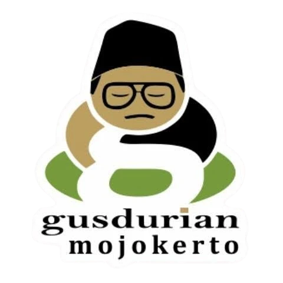

Pilih 2 kartu nilai untuk mengungkap isu sosial yang terkait. Temukan keterkaitan antar nilai Gusdurian!
Landasan spiritual tertinggi bahwa segala sesuatu bersumber dan bermuara kepada Tuhan Yang Maha Esa. Pemahaman tauhid yang benar tidak melahirkan kesombongan atau fanatisme sempit, melainkan menumbuhkan kesadaran untuk mengabdi kepada-Nya dengan cara menebar kebaikan, welas asih, dan memuliakan sesama ciptaan-Nya.
Prinsip dasar bahwa martabat manusia adalah suci dan harus dijunjung tinggi tanpa memandang suku, agama, ras, gender, maupun status sosial. Mengutip adagium terkenal Gus Dur: "Yang lebih penting dari politik adalah kemanusiaan." Nilai ini menentang segala bentuk kekerasan, diskriminasi, dan perendahan harkat manusia.
Komitmen untuk menempatkan segala sesuatu pada tempatnya secara proporsional serta memberikan hak kepada yang berhak menerimanya. Keadilan Gus Dur bukan sekadar kepatuhan formal pada teks hukum, melainkan keberpihakan nyata pada mereka yang lemah, tertindas, dan termarjinalkan dari sistem sosial-politik.
Keyakinan bahwa setiap manusia memiliki hak, derajat, dan kedudukan yang setara di hadapan Tuhan, hukum, dan kehidupan bermasyarakat. Nilai ini menolak hierarki kasta, feodalisme, dominasi kelompok mayoritas atas minoritas, serta diskriminasi gender.
Gerakan aktif untuk mengangkat harkat manusia dari belenggu penindasan, kemiskinan struktural, pembodohan, dan hegemoni kekuasaan yang otoriter. Pembebasan bertujuan memampukan kelompok yang rentan agar menjadi subjek yang mandiri dan berdaya atas kehidupannya sendiri.
Sikap saling merangkul, mengasihi, dan merasa senasib sepenanggungan antarmanusia. Nilai ini mencakup tiga pilar persaudaraan khas Gus Dur:
Sikap hidup yang wajar, bersahaja, proporsional, dan menolak kerakusan serta budaya materialistis/konsumtif. Kesederhanaan juga mencerminkan kerendahhatian intelektual dan spiritual—tidak silau oleh jabatan, kekayaan, atau kemewahan duniawi.
Keberanian moral untuk menegakkan kebenaran, membela yang tertindas, mengakui kesalahan secara jujur, dan bertanggung jawab atas setiap konsekuensi keputusan. Sikap ini berani melawan arus ketidakadilan meski harus menanggung risiko besar bagi diri sendiri.
Penghormatan dan penerimaan kritis terhadap nilai-nilai luhur, adat istiadat, dan kebudayaan lokal nusantara. Gus Dur memandang bahwa agama harus berakar dan berdialog secara harmonis dengan tradisi lokal (Pribumisasi Islam), bukan malah menghancurkan warisan budaya luhur yang merekatkan masyarakat.